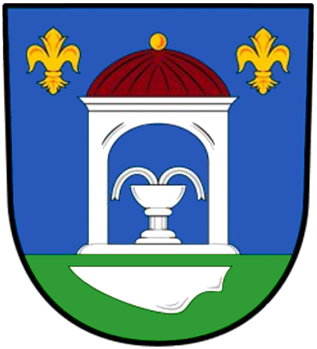

Větrný park Anenská Studánka – VR
Klasická verze · A-FrameVizualizace větrného parku – tři lokace
Funguje i bez headsetu – na počítači se rozhlížejte tažením myší. Na Questu doporučujeme výchozí verzi s WebXR Layers.
← výchozí verze (WebXR Layers)